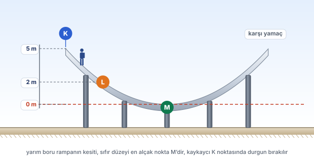
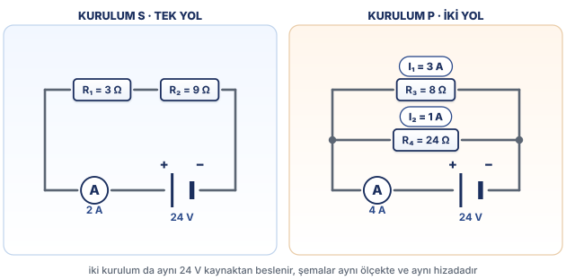

10. SINIF · HAFTA 14 · TAM HAFTA
Mekanik Enerjinin Korunumu
Biçim değişir. Toplam değişir mi?
Kaykay rampasında yüksekliği, sürati ve enerji sütunlarını birlikte oku. Sürtünmeli ve sürtünmesiz durumları karşılaştır.
BEN FİZİK YAPAMIYORUM · YENİ MAARİF MODELİ
Gerçek Hoca Kiti’nden seçilen iki hafta. Şekillerle anlat, cevapları tıklayarak aç, çalışma kâğıtlarını yazdır.
İki haftayı ve PDF’leri birlikte indir · ZIP ↓

Biçim değişir. Toplam değişir mi?
Kaykay rampasında yüksekliği, sürati ve enerji sütunlarını birlikte oku. Sürtünmeli ve sürtünmesiz durumları karşılaştır.

Tek yol mu, iki yol mu?
Aynı dirençlerle iki ayrı devre kur. Akımın ve gerilimin dağılımını şemalar, ölçüm kayıtları ve karşılaştırmalı sorularla keşfet.